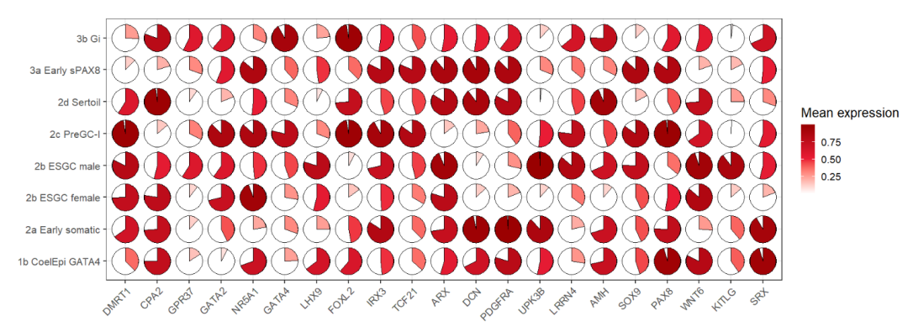

Chapter 5 geom_jjpie
geom_jjpie can be used to visualize a single value on pie chart graph and shows how the ratio of value to the max.
the following we will illustrate how the geom_jjpie works.
5.1 basic usage
we first prepare a correlation matrix data:
library(ggplot2)
library(jjPlot)
library(reshape2)
# test
cor_data <- cor(mtcars) %>%
data.frame() %>%
mutate(x = rownames(.)) %>%
melt(.,id.vars = "x")the geom_jjpie need three mapping variables at least: x, y, piefill:
ggplot(cor_data,
aes(x = x,y = variable)) +
geom_jjpie(aes(piefill = value)) +
coord_fixed()we can give a specified pie.theta:
ggplot(cor_data,
aes(x = x,y = variable)) +
geom_jjpie(aes(piefill = value),
pie.theta = 120) +
coord_fixed()using correlation value as filled color:
ggplot(cor_data,
aes(x = x,y = variable,fill = value)) +
geom_jjpie(aes(piefill = value),
pie.theta = 120) +
coord_fixed()you can also change the pie degree and add rect background:
ggplot(cor_data,
aes(x = x,y = variable,fill = value)) +
geom_jjpie(aes(piefill = value),
pie.theta = 270,
add.rect = T) +
coord_fixed()remove circle background:
ggplot(cor_data,
aes(x = x,y = variable,fill = value)) +
geom_jjpie(aes(piefill = value),
pie.theta = 90,
add.rect = T,
add.circle = F) +
coord_fixed()if you do not define your pie.theta, the pie degree will be calculated automatically acorrding to the piefill:
library(RColorBrewer)
ggplot(cor_data,
aes(x = x,y = variable,fill = value)) +
geom_jjpie(aes(piefill = value)) +
scale_fill_gradientn(colours = brewer.pal(11, "RdYlBu")) +
coord_fixed()you can change the circle background fill color:
ggplot(cor_data,
aes(x = x,y = variable,fill = value)) +
geom_jjpie(aes(piefill = value),
circle.fill = '#009933') +
scale_fill_gradientn(colours = brewer.pal(11, "RdYlBu")) +
coord_fixed()
add a second circle to make a hollow pie:
ggplot(cor_data,
aes(x = x,y = variable,fill = value)) +
geom_jjpie(aes(piefill = value),
circle.fill = '#009933',
circle.radius = 1) +
scale_fill_gradientn(colours = brewer.pal(11, "RdYlBu")) +
coord_fixed()change the second circle fill color:
ggplot(cor_data,
aes(x = x,y = variable,fill = value)) +
geom_jjpie(aes(piefill = value),
circle.fill = '#009933',
circle.radius = 1,
hollow.fill = 'grey90') +
scale_fill_gradientn(colours = brewer.pal(11, "RdYlBu")) +
coord_fixed()5.2 asymmetric matrix
geom_jjpie also can be used to asymmetric matrix.
cor_data1 <- cor_data %>% filter(variable %in% c('mpg','cyl','disp','hp'))
ggplot(cor_data1,
aes(x = x,y = variable,fill = value)) +
geom_jjpie(aes(piefill = value),
width = 1.3) +
coord_fixed()add rect:
ggplot(cor_data1,
aes(x = x,y = variable,fill = value)) +
geom_jjpie(aes(piefill = value),
width = 1,
add.rect = T) +
coord_fixed()cor_data2 <- cor_data %>% filter(x %in% c('mpg','cyl','disp'))
ggplot(cor_data2,
aes(x = x,y = variable,fill = value)) +
geom_jjpie(aes(piefill = value),
width = 0.7) +
coord_fixed()5.3 example
here we show an example:
# load data
dot_data <- read.delim('gene-dot.txt',header = T) %>%
arrange(class)
# check
head(dot_data,3)
# cell gene class mean.expression percentage
# 1 1b CoelEpi GATA4 DMRT1 Early supporting 0.3749122 36.03614
# 2 1b CoelEpi GATA4 CPA2 Early supporting 0.7495705 95.82235
# 3 1b CoelEpi GATA4 GPR37 Early supporting 0.1604790 95.79420
# colnames
colnames(dot_data)
# [1] "cell" "gene" "class" "mean.expression" "percentage"
unique(dot_data$cell)
# [1] "1b CoelEpi GATA4" "2a Early somatic" "2b ESGC male" "2b ESGC female"
# [5] "2c PreGC-I" "2d Sertoil" "3a Early sPAX8" "3b Gi"
# add cell group
dot_data$cellGroup <- case_when(
dot_data$cell %in% c("1b CoelEpi GATA4", "2a Early somatic", "2b ESGC male") ~ "cell type1",
dot_data$cell %in% c("2b ESGC female", "2c PreGC-I", "2d Sertoil") ~ "cell type2",
dot_data$cell %in% c("3a Early sPAX8", "3b Gi") ~ "cell type3"
)
# order
dot_data$gene <- factor(dot_data$gene,levels = unique(dot_data$gene))pie plot:
# plot
ggplot(dot_data,aes(x = gene,y = cell,fill = mean.expression)) +
geom_jjpie(aes(piefill = mean.expression),width = 1.3) +
scale_fill_gradient2(low = 'white',mid = '#EB1D36',high = '#990000',
midpoint = 0.5,
name = 'Mean expression') +
theme_bw(base_size = 16) +
xlab('') + ylab('') +
theme(axis.text.x = element_text(angle = 45,hjust = 1)) +
coord_fixed()
hollow pie:
ggplot(dot_data,aes(x = gene,y = cell,fill = mean.expression)) +
geom_jjpie(aes(piefill = mean.expression),width = 1.3,
circle.radius = 1) +
scale_fill_gradient2(low = 'white',mid = '#EB1D36',high = '#990000',
midpoint = 0.5,
name = 'Mean expression') +
theme_bw(base_size = 16) +
xlab('') + ylab('') +
theme(axis.text.x = element_text(angle = 45,hjust = 1)) +
coord_fixed()add rect:
ggplot(dot_data,aes(x = gene,y = cell,fill = mean.expression)) +
geom_jjpie(aes(piefill = mean.expression),
width = 1.3,
circle.radius = 1,
add.rect = T,
rect.height = 1.5,
rect.width = 1.5) +
scale_fill_gradient2(low = 'white',mid = '#EB1D36',high = '#990000',
midpoint = 0.5,
name = 'Mean expression') +
theme_bw(base_size = 16) +
xlab('') + ylab('') +
theme(axis.text.x = element_text(angle = 45,hjust = 1)) +
coord_fixed()5.4 limitations
I am not sure the exact relation between y axis range and x axis range and sometimes the pie produced from asymmetric matrix data will be strange. Here you can ajust the shift parameter to make the pie look much circular.
cor_datax <- cor_data %>% filter(x %in% c('mpg','cyl','disp','hp',"drat", "wt")) %>%
filter(variable %in% c('mpg','cyl','disp'))
ggplot(cor_datax,
aes(x = x,y = variable,fill = value)) +
geom_jjpie(aes(piefill = value)) +
coord_fixed()ajust:
ggplot(cor_datax,
aes(x = x,y = variable,fill = value)) +
geom_jjpie(aes(piefill = value),
shift = 0.9) +
coord_fixed()